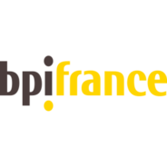
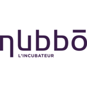
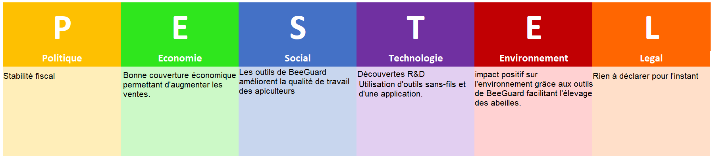

BeeGuard procure quatre outils, tout ces outils sont sans fils et ont une autonomie de deux ans :
L'antivol GPS :
Placé dans la ruche, le GPS signale le moindre déplacement brusque à l’apiculteur via un SMS tout en partageant la localisation de la ruche, le GPS possède aussi un capteur de température, utile pour déterminer le taux d’activité des abeilles ainsi que le développement des couvains (nid ou grandissent les larves et nymphes des abeilles).
Le capteur de poids :
Se plaçant sous la ruche, ce capteur permet de peser les ruches. Peser les ruches est très utiles pour évaluer les stocks de nourritures de la ruche ainsi que le miel produit en période de miellées (période ou les abeilles produisent le plus de miel).
La station météo :
Se plaçant sur un support proche des ruches, la station météo collecte divers informations comme la température extérieure, le taux d’humidité, la pluviométrie, la pression atmosphérique ainsi que la vitesse du vent. Ces informations sont importante pour l’apiculteur car les abeilles sont peu voir pas active sous une certaine température ou quand le temps est venteux ou pluvieux, le temps à aussi un impact important pour la végétation aux alentours, pouvant affecter la qualité du nectar donc du miel par extension.
L'application :
Le principal atout des outils de BeeGuard est le fait que leurs données sont stockés et peuvent être visionnées sous forme de graphiques sur l’application, cette application est disponible sur smartphone, PC et MAC. L’apiculteur peut aussi créer son registre d’élevage apicole (document qui rassemble les informations sur l’exploitation apicole).
La France est l’un des pays qui consomme le plus de miel d’Europe, consommant environ 40 000 tonnes de miels par ans (soit environ 600 grammes par habitants par ans).
Environ 60 000 apiculteurs travaillaient en France et produisent environ 21 000 tonnes de miels (données datant de 2019) dont 4000 ont été exportés à l’étranger.
Le reste du miel provient de l’exportation (soit environ 32 000 tonnes)
BeeGuard à fait un choix judicieux en créant et localisant leurs entreprise en Occitanie : L’Occitanie fait partie des plus grand producteurs de miels de France, ayant plus de 6000 apiculteurs actifs pour un total de 276 000 ruches et produisent un peu plus de 4000 tonnes de miels par ans. De plus l’Occitanie est réputé pour être un incubateur à startups et entreprises.
L’entreprise BeeGuard risque d’avoir un impact positif sur l’apiculture, les outils qu’ils vendent facilitent le travail des apiculteurs qui, comme la plupart des métiers agricoles, est un métier qui devient de plus en plus dur à maintenir avec l’extension des villes, de plus les abeilles sont une espèce en voie d’extinction et les outils de BeeGuard pourront facilité leur élevage.
BeeGuard est soutenu par divers organismes tels que :
BpiFrance (Banque finançant des entreprises)

Climate-KIC (communauté cofondé par l’Union Européenne visant une transition totale vers l’utilisation d’énergie verte)

Nubbō (incubateur de startups)

La région Occitanie.

modèle économique
-BeeGuard propose la vente ou la location d’outils connectés aidant les apiculteurs dans leurs travails.
-Les avantages des produits de BeeGuard :
une autonomie de 2 ans pour tout les outils, stockage des données des outils en ligne, un système d’antivol grâce au GPS, l’installation des outils est simple et permet de voir les impacts de l’apiculteur sur la biodiversité.
-Les clients de BeeGuard sont des apiculteurs de tout âge, les outils de BeeGuard peuvent les aider dans leurs quotidien, leurs donnant des données utiles pour l’élevage et la productivité.
-Les principales dépenses de BeeGuard sont dues à la production de leurs outils et à la recherche, leurs recettes sont générées grâce à la vente et à la location de leurs outils.
Étude de chaîne :

SWOT :
Forces de l'entreprise :
-Clientèle fidèle
-Bonne couverture géographique
-Peu de concurrents
-De nombreux partenariats
-Bonne image de marque
Faiblesses de l'entreprise :
-Clientèle très spécifique
-Marketing insuffisant
Opportunités de l'entreprise :
-Faillite de ses concurrents
-Grande avance sur la concurrence
Menaces de l'entreprise :
-Nouveaux concurrents
-Possibilité de se faire rattraper technologiquement par la concurrence
-Déclin des abeilles et de l’apiculture
Pestel :
